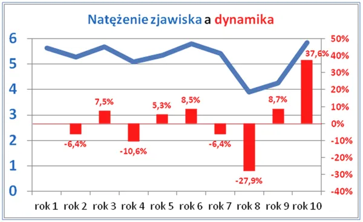

Strachy na lachy
Niestety nawet, gdy sytuacja wraca do normy, media głównego ścieku robią z tego powód do strachu a portale społecznościowe skutecznie ten strach rozsiewają wśród ludzi omijających mainstream. Klikając w to sami nakręcamy maszynkę do straszenia. Ważne telewizory pokazują ludzi z pogotowia ratunkowego mówiących o dramatycznym wzroście interwencji kardiologicznych. Oczywiście odnoszą się do lat ubiegłych, nawet 30% więcej, groza!
Ale hola hola, w ubiegłych latach mieliśmy anormalny spadek takich interwencji, bo ludzie ze strachu przed izolacją w szpitalu "leczyli" zawały sami, np. w gorącej kąpieli! Spadki wezwań i hospitalizacji tego typu były właśnie na poziomie +-30%. Teraz, gdy sytuacja "wraca do normy", dynamika jest dodatnia. Nie trzeba nawet szukać danych z lat ubiegłych, aby to zilustrować, co też czynię.

Dynamika (czerwone), to iloraz roku obecnego (niebieskie) do poprzedniego minus jeden, jak było mniej a jest więcej, to rośnie. Zagadka rozwiązana!
Kiepski stan zdrowia Polaków to inny temat, jego przyczyną jest między innymi ciągły stres z powodu fatalnych przekazów medialnych. Bać się powinniśmy tego, czego w telewizorach nie ma, co przed nami mam być ukryte.
Paweł Klimczewski